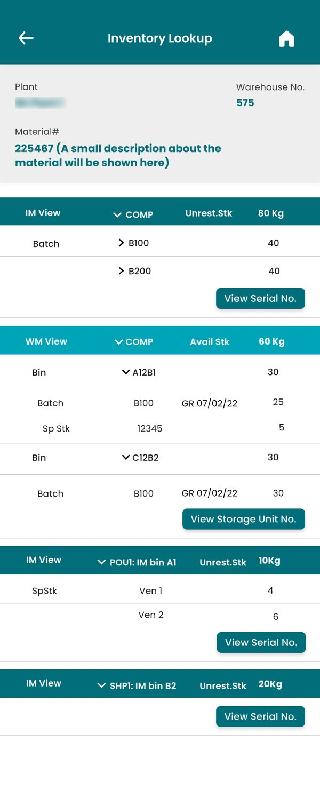
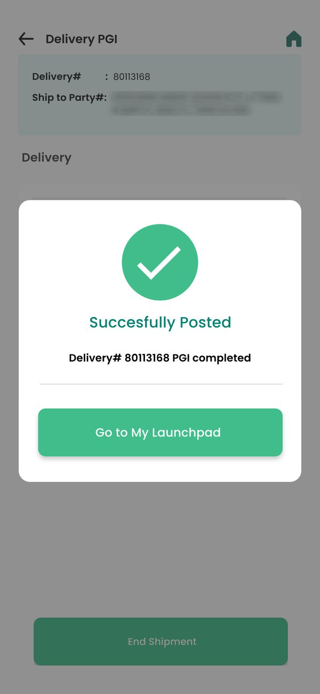
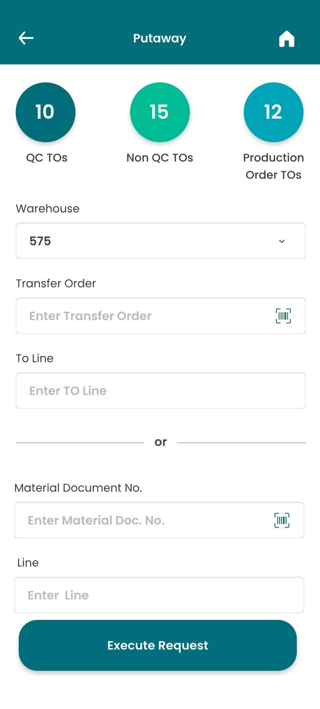
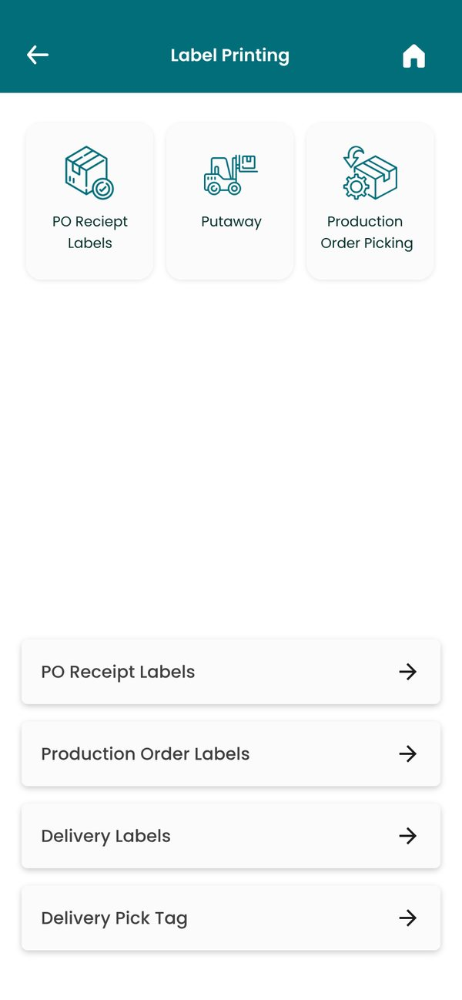
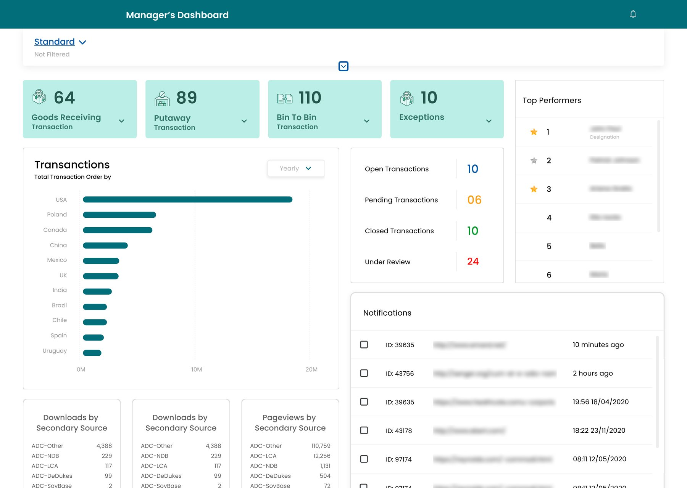

EVERY SCAN IS AN SAP TRANSACTION.
In a Baker Hughes warehouse, receiving goods, putting them away, moving them between bins, picking for orders and counting stock are all SAP transactions. Each one needs the right plant, warehouse, storage location, bin, batch and often serial numbers, entered by someone standing in an aisle with a handheld.
The app puts ten of these transactions on one launch pad: goods receiving, putaway, bin to bin moves, production order picking, delivery picking, delivery goods issue, transfer posting, label printing, cycle count entry and inventory lookup.
The Problem
Make SAP warehouse transactions fast and safe on a small screen, for people who do them all day.
Screen: The launch pad, web view

Ten transactions, one place
Every warehouse task starts from the same screen.
An icon and a name each
Each tile says what it does in plain words.
One tap each
Each transaction opens from its own tile.
THREE DECISIONS THAT SHAPED THE APP.
Decision 01
Ask Only for What's Required
On inventory lookup, the plant is the only required field. Warehouse, storage location, bin, batch and material are all marked optional, so a worker can search as wide or as narrow as the moment needs.
The same thinking runs through goods receiving: the screen starts from the open purchase orders due in the next few days, filtered by vendor, before asking for any detail.
Screen: Inventory lookup

Only the plant is required.
Decision 02
Show the Stock Two Ways
Inventory lookup shows stock in an inventory management view and in a warehouse management view, with unrestricted and special stock, bins and quantities. Serial numbers and storage units open on demand, so the main screen stays readable.
Screen: Inventory lookup results

Both views on one screen.
Decision 03
Confirm With the SAP Result
After a transaction posts, the app shows what SAP created, such as the document posted and the transfer order created, by number. So the worker sees what SAP did with the scan.
Long material descriptions are capped at two lines, and every list item carries the PO line, material, quantity and batch.
Screen: Delivery goods issue, posted

The number SAP posted, on the confirmation.
FROM ITERATIONS TO CONFIRMED SCREENS.
The file shows the design moving in steps. There are dated pages for inventory lookup from January and February 2022, a page of iterations and a page of confirmed screens, and the putaway and goods receiving screens went through many variations before the final set. The work then grew past the handheld: a cycle count flow, a web view, and a dashboard for the warehouse supervisor.
Screen: Goods receiving

The PO line in view while the item is received.
Screen: Putaway

What is waiting, then where to start.
Screen: Label printing

Each label type is one tap.
Screen: The warehouse supervisor dashboard

Counts by transaction
Goods receiving, putaway, bin to bin and exceptions at the top.
Where things stand
Open, pending, closed and under review, side by side.
What just happened
Notifications with their time, next to the numbers.
WHAT WAS DESIGNED.
10
Warehouse transactions on one launch pad.
3
Surfaces: the handheld app, a web view and a supervisor dashboard.
1
Required field on inventory lookup; the rest are optional.
This page reports scope, not measured results.